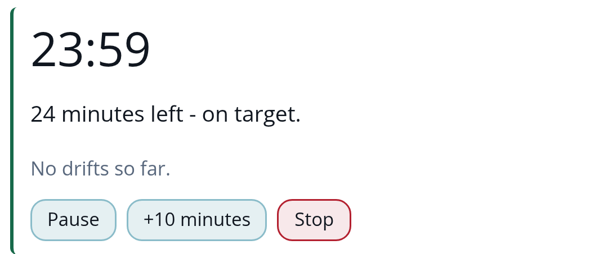
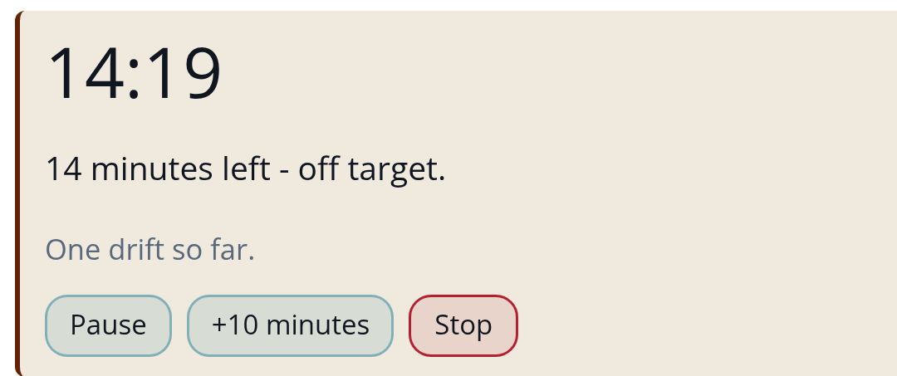
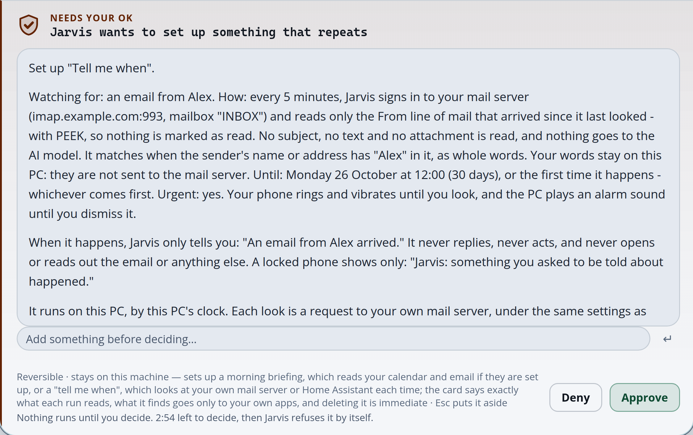

A day with Jarvis.
An AI assistant that lives on your own PC.
Morning
9:00
You
Focus for 30 minutes.
Jarvis
YouTube can wait.
Brain › Work › Focus session


It watches which app is in front, on your PC only, and keeps counts, never what it saw.
Afternoon
15:00
You
Tell me when an email from Alex arrives. Urgently.
The approval card on the PC

15:47▾ ▮
Jarvis · Alarms and urgent alerts
Tell me when
An email from Alex arrived.
Stop
One yes sets it up. Your phone rings until you look. It never replies.
Your day.
Your PC.
Your rules.
Made for a Windows PC
with an 8 GB NVIDIA graphics card
Android phone app · No subscription
JARVIS